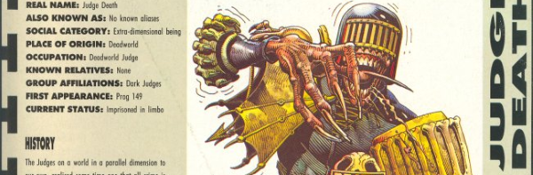

A series of data sheet posters for various characters from Judge Dredd.
Art by Cliff Robinson
| Character | Parts | Pages | w indicates a wraparound coverCovers | Year(s) | Issues | Writer | Artist | Colourist | Letterer |
|---|---|---|---|---|---|---|---|---|---|
Linked to [Features] | IndexesJudge Dredd | 1 | 1 | 0 | 1990 | 700 | editorial | Cliff Robinson | <-- | n/a |
Linked to: [Features] | Indexes Judge DeathJudge Death | 1 | 1 | 0 | 1990 | 701 | editorial | Cliff Robinson | <-- | n/a |
Linked to: [Features] | Indexes Anderson Psi DivisionJudge Anderson | 1 | 1 | 0 | 1990 | 702 | editorial | unknown | <-- | n/a |
Linked to: [Features] | Indexes Judge HersheyJudge Hershey | 1 | 1 | 0 | 1990 | 703 | editorial | Paul Marshall | <-- | n/a |
Linked to: [Features] | Indexes [Owen Krysler]Judge Child | 1 | 1 | 0 | 1990 | 704 | editorial | unknown | <-- | n/a |
Linked to: [Features] | Indexes [Owen Krysler]The Mutant | 1 | 1 | 0 | 1990 | 706 | editorial | Paul Marshall | <-- | n/a |
Linked to: [Features] | Indexes [Judge Giant, Snr.]Judge Giant | 1 | 1 | 0 | 1990 | 710 | editorial | Paul Marshall | <-- | n/a |
Linked to: [Features] | Indexes Walter the WobotWalter the Wobot | 1 | 1 | 0 | 1991 | JDYB'92 | editorial | Paul Marshall | [greyscale] | n/a |
| year | episodes | pages |
| 1980 | 0 | 0 |
| 1981 | 0 | 0 |
| 1982 | 0 | 0 |
| 1983 | 0 | 0 |
| 1984 | 0 | 0 |
| 1985 | 0 | 0 |
| 1986 | 0 | 0 |
| 1987 | 0 | 0 |
| 1988 | 0 | 0 |
| 1989 | 0 | 0 |
| 1990 | 7 | 7 |
| 1991 | 1 | 1 |
| 1992 | 0 | 0 |
| 1993 | 0 | 0 |
| 1994 | 0 | 0 |
| 1995 | 0 | 0 |
| 1996 | 0 | 0 |
| 1997 | 0 | 0 |
| 1998 | 0 | 0 |
| 1999 | 0 | 0 |
| 2000 | 0 | 0 |
| 2001 | 0 | 0 |